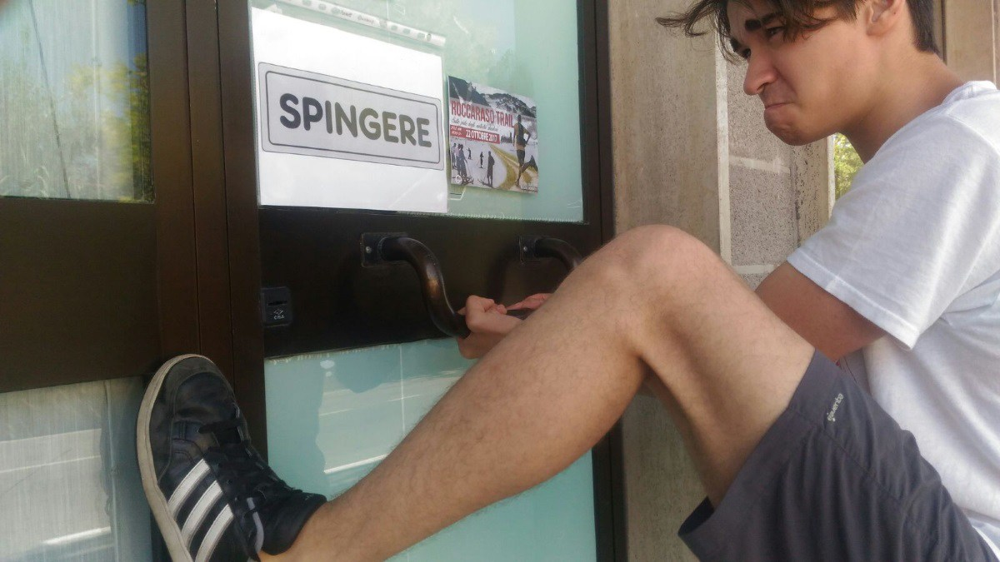

"Non capiscono la differenza tra spingere e tirare", un diplomato su due non entra all’Università
Articolo di Cultura 19/03/2018 di Nicola Porceddu
Ragazzo che tira una porta con su scritto spingere
Dellavi (TA) – Una giornata davvero travagliata per i circa duecento studenti freschi dell’esame di maturità
che, stamattina, si sono trovati ad affrontare il test di ingresso per accedere all’Università di Dellavi.
Le prime difficoltà si erano già manifestate qualche giorno prima, quando le nuove promesse della società
avevano avuto a che fare -per la prima volta in totale autonomia- con le macchinose trappole della burocrazia italiana.
"Cioè, che vuol dire che per iscrivermi non è sufficiente un account Google? – racconta un incredulo Bengieféde –
E veramente l’Università ha un sito tutto suo al posto di una pagina Facebook?".
Il nutrito gruppo di candidati si è radunato stamattina davanti all’ingresso dell’Aula Magna dell’Università di Dellavi
e, subito dopo aver catturato il pokémon Blissey (molto raro), si sono trovati di fronte ad una porta a vetri. Chiusa.
I battenti erano sormontati da un grosso cartello che riportava la scritta "Test di ingresso. Apertura alle 9:00", mentre
nella parte centrale c’era un secondo cartello, grigiastro, che recava una sola parola: "Spingere".
Nient’altro.
I giovani candidati, abituati ad affrontare gli strani quesiti loro somministrati durante la famigerata “seconda prova”,
non si sono lasciati cogliere di sorpresa. Tutto sommato, per essere un test di accesso all’Università, sembrava alla loro
portata. I più fiduciosi ritenevano che per entrare fosse sufficiente attendere che il grande portone si aprisse da solo
"alle 9:00", come scritto nel cartello. I più scafati, d’altra parte, evidenziavano che se nella porta era presente un indizio
("Spingere") qualcosa avrebbe anche dovuto significare.
Alle 9:01 la porta a vetri era ancora completamente immobile davanti agli sbigottiti candidati. A quel punto, era necessario
risolvere l’enigma che si celava dietro la parola "Spingere".
"Ricordo che ha a che fare con l’esercizio di una forza – improvvisa Eusebio, brillante diplomato allo
scientifico-tecnologico-industrial-social-media – ma non ricordo se si tratta di una forza da esercitare in direzione della
porta o in direzione opposta. O meglio, meglio: la direzione è sempre quella… perpendicolare alla porta… ma il verso, da che
verso va?". Gianfilippa, aspirante ingegnera gestionale prova il tutto per tutto: "La normativa sulla sicurezza prevede che
le porte di ingresso si debbano aprire verso l’uscita, quindi spingere significa che deve essere esercitata una forza verso
lo spingitore medesimo". Il primo tentativo del futuro scienziato motorio Uomorummo, però, non va a buon fine. La porta resta
immobile nella sua posizione.
"Forse non è stata applicata abbastanza forza – tenta ancora Eusebio – qualcuno ha calcolato la massa del battente?"
Uomorummo, noto alle cronache per non accettare questo tipo di provocazioni, si lancia in un secondo tentativo che, però, conduce
solo allo sradicamento del maniglione antipanico, mentre il resto della porta rimane ancora lì, del tutto inamovibile, nonostante
la forza inarrestabile di Uomorummo. I più arguti si chiedono se la porta possa essere sfondata da una bici con le ruote quadrate,
ma nessuno li prende sul serio.
Nel frattempo, un candidato sopraggiunto in ritardo, si insinua nella calca e, sorpassando tutti i colleghi, riesce inspiegabilmente
ad entrare. Il come, però, resta un mistero per gli astanti, nel frattempo impegnati – i più – a cercare un tutorial su youtube e
– i meno – a catturare un secondo Blissey.
Alle ore 10:30, solo circa metà dei ragazzi era riuscita a varcare la soglia dell’Aula. I presenti, pur riportando voti mediocri
nel test di ingresso, sono stati tutti ammessi: "Avevamo 120 posti per 200 candidati, ma solo 97 si sono presentati –
racconta il rettore dell’Università di Dellavi – quattro sono entrati dalla porta principale, novanta hanno aggirato il problema
entrando da dietro, infine, tre pensatori laterali si sono calati dal condotto dell’aria condizionata".